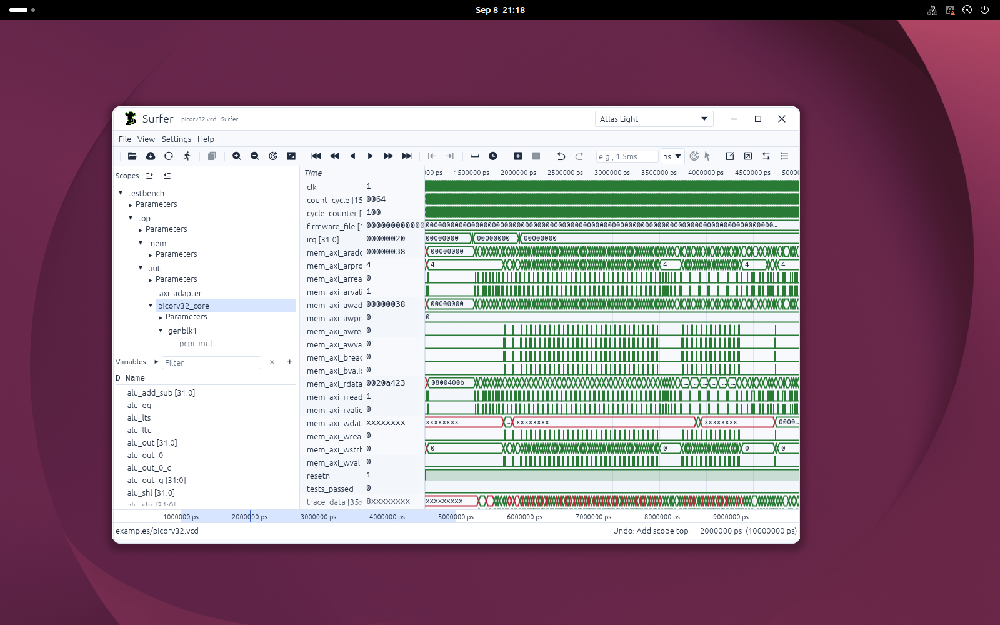
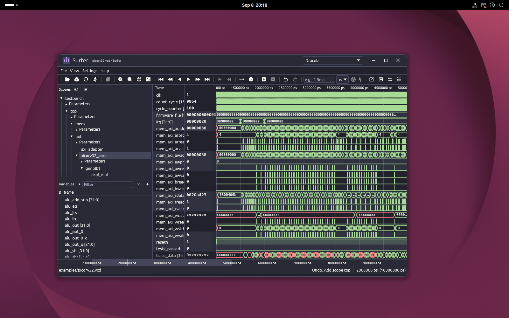
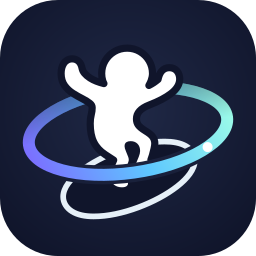

Interface / Appearance
A theme for the whole workspace.
When inspecting a dense trace, you need to distinguish a button you can press, a selected signal, and the canvas behind it. Surfer now gives idle, hovered, and pressed controls distinct surfaces, with rounded corners and visible focus. The native title bar shares that palette.
Eight additional palettes
Atlas Light and Dark, GitHub Light and Dark, Catppuccin Latte and Mocha, Monokai, and Dracula reproduce the demo's nine widget colors. Existing Surfer themes remain available. The preview below demonstrates the actual color tokens and interaction states; it is a browser illustration, not a screenshot of Surfer.
Hover or focus a control, then select a signal.
Selected: counter
Select the real application palette from the title-bar dropdown or Settings → Theme. A selection applies immediately to widgets, waveforms, and source views. In the command prompt (Space → theme_select), typing a filter or moving with the arrow keys previews the highlighted palette. Enter keeps it; Escape, clearing the prompt, or switching to another command restores the palette from before the preview. Previewing does not add commands to history. To choose a startup palette, set the config's theme to its exact name, for example Atlas Dark. Theme selection is a session preference; it does not rewrite your config file. Loading a workspace preserves the current theme.
One preference, shared across tiles
Owns the selected name and resolved colors.
Loads defaults, bundled colors, and applicable local overrides.
Update both OS appearance modes and invalidate cached drawing.
The title bar and settings menu send the same message. There is no separate title-bar preference to drift out of sync. Runtime window resources belong to SystemState and are not serialized into a workspace. Presentation stays outside runtime VTR data.
Source: theme loading, widget visuals, message handling.
A title bar that follows the palette


Native Surfer uses a 40-point custom header with the same Surfer icon as the desktop application. Drag the header to move the window; double-click its background to maximize or restore. The controls minimize, maximize/restore, and close. The theme dropdown includes bundled and discovered custom themes. Eight edge and corner targets resize an ordinary window; maximized and fullscreen windows omit them. Fullscreen also hides the header.
On Linux, unmaximized windows have 12-point corners. Input and opaque regions follow the rounded outline; Wayland draws an input-transparent shadow below the main surface, while X11 leaves the shadow to the compositor. Windows on other platforms use square corners. Web embeds retain their host's window controls. Minimum native size is 520 × 320 points.
The palette is shared, but window commands belong to the native host. Linux protocol objects are dropped before the retained winit window; the borrowed main surface is never destroyed by Surfer. Failed decoration integration stops retrying that backend. The native smoke test exercises theme selection, maximize, edge resize, and the minimum window size in an isolated GNOME Wayland compositor; behavior on other compositors should be checked on those platforms.
Source: header and gestures, native geometry, window setup, native smoke test.
Widget tokens without duplicating a theme
The optional ui table adds dark_mode, muted, accent, subtle, and hover. Missing values derive from existing theme fields; old files need no migration. Light themes start from egui's light visuals instead of inheriting dark-only defaults.
Layout follows the role of each widget. Hierarchy and variable rows use rectangular selection, no vertical gaps, and a shared font-aware height for rendering and virtual scrolling. Inputs and ordinary buttons use restrained three-point corners. The toolbar uses 26-point icon targets, fine separators that become drag handles on hover, and horizontal scrolling when space is limited. Section titles and filter controls share a baseline. Window corners remain independent of content styling.
Read the theme parameter reference and the Atlas Light theme for the complete mapping. New semantic colors should extend the theme schema, not enter VTR files.
One logo across the application
The Aurora mascot identifies Surfer Ultra in the desktop window, custom title bar, browser tab, server page, and VS Code extension. The artwork is fixed application branding; changing a waveform theme does not recolor it.

The SVG master feeds the asset generator. It produces the shared desktop/title-bar PNG, general-purpose PNG, extension PNG, and identical browser/server ICO files with 16–256 px frames. The generated files are committed, so application builds consume them without requiring an SVG renderer.
{kind=link}
The native entry point and custom title bar embed the same PNG. Trunk copies the browser favicon, while Surver embeds its copy. Regeneration and verification commands are in the development guide. Tiny previews retain the mascot and orbit; fine foot and board separation becomes clearer at larger sizes.